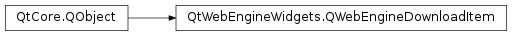

QWebEngineDownloadItem¶
Synopsis¶
Functions¶
- def
id() - def
interruptReason() - def
interruptReasonString() - def
isFinished() - def
isPaused() - def
isSavePageDownload() - def
mimeType() - def
path() - def
receivedBytes() - def
savePageFormat() - def
setPath(path) - def
setSavePageFormat(format) - def
state() - def
totalBytes() - def
url()
Signals¶
- def
downloadProgress(bytesReceived, bytesTotal) - def
finished() - def
isPausedChanged(isPaused) - def
stateChanged(state)
Detailed Description¶
The
PySide2.QtWebEngineWidgets.QWebEngineDownloadItemclass provides information about a download.
PySide2.QtWebEngineWidgets.QWebEngineDownloadItemmodels a download throughout its life cycle, starting with a pending download request and finishing with a completed download. It can be used, for example, to get information about new downloads, to monitor progress, and to pause, resume, and cancel downloads.Downloads are usually triggered by user interaction on a web page. It is the
PySide2.QtWebEngineWidgets.QWebEngineProfile‘s responsibility to notify the application of new download requests, which it does by emitting thePySide2.QtWebEngineWidgets.QWebEngineProfile.downloadRequested()signal together with a newly createdPySide2.QtWebEngineWidgets.QWebEngineDownloadItem. The application can then examine this item and decide whether to accept it or not. A signal handler must explicitly callPySide2.QtWebEngineWidgets.QWebEngineDownloadItem.accept()on the item for Qt to actually start downloading and writing data to disk. If no signal handler callsPySide2.QtWebEngineWidgets.QWebEngineDownloadItem.accept(), then the download request will be automatically rejected and nothing will be written to disk.Note
Some properties, like the
PySide2.QtWebEngineWidgets.QWebEngineDownloadItem.path()under which the file will be saved, can only be changed before callingPySide2.QtWebEngineWidgets.QWebEngineDownloadItem.accept().
Object Life Cycle¶
All items are guaranteed to be valid during the emission of the
PySide2.QtWebEngineWidgets.QWebEngineProfile.downloadRequested()signal. IfPySide2.QtWebEngineWidgets.QWebEngineDownloadItem.accept()is not called by any signal handler, then the item will be deleted immediately after signal emission. This means that the application must not keep references to rejected download items. It also means the application should not use a queued connection to this signal.If
PySide2.QtWebEngineWidgets.QWebEngineDownloadItem.accept()is called by a signal handler, then thePySide2.QtWebEngineWidgets.QWebEngineProfilewill take ownership of the item. However, it is safe for the application to delete the item at any time, except during the handling of thePySide2.QtWebEngineWidgets.QWebEngineProfile.downloadRequested()signal. ThePySide2.QtWebEngineWidgets.QWebEngineProfilebeing a long-lived object, it is in fact recommended that the application delete any items it is no longer interested in.Note
Deleting an item will not cancel a possible ongoing download. If that is desirable, then
PySide2.QtWebEngineWidgets.QWebEngineDownloadItem.cancel()must be called separately.
Web Page Downloads¶
In addition to normal file downloads, which consist simply of retrieving some raw bytes from the network and writing them to disk, Qt also supports saving complete web pages, which involves parsing the page’s HTML, downloading any dependent resources, and potentially packaging everything into a special file format (
PySide2.QtWebEngineWidgets.QWebEngineDownloadItem.savePageFormat()). To check if a download is for a file or a web page, usePySide2.QtWebEngineWidgets.QWebEngineDownloadItem.isSavePageDownload().
-
PySide2.QtWebEngineWidgets.QWebEngineDownloadItem.DownloadState¶ This enum describes the state of the download:
Constant Description QWebEngineDownloadItem.DownloadRequested Download has been requested, but has not been accepted yet. QWebEngineDownloadItem.DownloadInProgress Download is in progress. QWebEngineDownloadItem.DownloadCompleted Download completed successfully. QWebEngineDownloadItem.DownloadCancelled Download has been cancelled. QWebEngineDownloadItem.DownloadInterrupted Download has been interrupted (by the server or because of lost connectivity).
-
PySide2.QtWebEngineWidgets.QWebEngineDownloadItem.SavePageFormat¶ This enum describes the format that is used to save a web page.
Constant Description QWebEngineDownloadItem.UnknownSaveFormat This is not a request for downloading a complete web page. QWebEngineDownloadItem.SingleHtmlSaveFormat The page is saved as a single HTML page. Resources such as images are not saved. QWebEngineDownloadItem.CompleteHtmlSaveFormat The page is saved as a complete HTML page, for example a directory containing the single HTML page and the resources. QWebEngineDownloadItem.MimeHtmlSaveFormat The page is saved as a complete web page in the MIME HTML format.
-
PySide2.QtWebEngineWidgets.QWebEngineDownloadItem.DownloadInterruptReason¶ Describes the reason why a download was interrupted:
Constant Description QWebEngineDownloadItem.NoReason Unknown reason or not interrupted. QWebEngineDownloadItem.FileFailed General file operation failure. QWebEngineDownloadItem.FileAccessDenied The file cannot be written locally, due to access restrictions. QWebEngineDownloadItem.FileNoSpace Insufficient space on the target drive. QWebEngineDownloadItem.FileNameTooLong The directory or file name is too long. QWebEngineDownloadItem.FileTooLarge The file size exceeds the file system limitation. QWebEngineDownloadItem.FileVirusInfected The file is infected with a virus. QWebEngineDownloadItem.FileTransientError Temporary problem (for example the file is in use, out of memory, or too many files are opened at once). QWebEngineDownloadItem.FileBlocked The file was blocked due to local policy. QWebEngineDownloadItem.FileSecurityCheckFailed An attempt to check the safety of the download failed due to unexpected reasons. QWebEngineDownloadItem.FileTooShort An attempt was made to seek past the end of a file when opening a file (as part of resuming a previously interrupted download). QWebEngineDownloadItem.FileHashMismatch The partial file did not match the expected hash. QWebEngineDownloadItem.NetworkFailed General network failure. QWebEngineDownloadItem.NetworkTimeout The network operation has timed out. QWebEngineDownloadItem.NetworkDisconnected The network connection has been terminated. QWebEngineDownloadItem.NetworkServerDown The server has gone down. QWebEngineDownloadItem.NetworkInvalidRequest The network request was invalid (for example, the original or redirected URL is invalid, has an unsupported scheme, or is disallowed by policy). QWebEngineDownloadItem.ServerFailed General server failure. QWebEngineDownloadItem.ServerBadContent The server does not have the requested data. QWebEngineDownloadItem.ServerUnauthorized The server did not authorize access to the resource. QWebEngineDownloadItem.ServerCertProblem A problem with the server certificate occurred. QWebEngineDownloadItem.ServerForbidden Access forbidden by the server. QWebEngineDownloadItem.ServerUnreachable Unexpected server response (might indicate that the responding server may not be the intended server). QWebEngineDownloadItem.UserCanceled The user canceled the download.
-
PySide2.QtWebEngineWidgets.QWebEngineDownloadItem.accept()¶ Accepts the current download request, which will start the download.
If the item is in the
DownloadRequestedstate, then it will transition into theDownloadInProgressstate and the downloading will begin. If the item is in any other state, then nothing will happen.
-
PySide2.QtWebEngineWidgets.QWebEngineDownloadItem.cancel()¶ Cancels the current download.
If the item is in the
DownloadInProgressstate, then it will transition into theDownloadCancelledstate, the downloading will stop, and partially downloaded files will be deleted from disk.If the item is in the
DownloadCompletedstate, then nothing will happen. If the item is in any other state, then it will transition into theDownloadCancelledstate without further effect.
-
PySide2.QtWebEngineWidgets.QWebEngineDownloadItem.downloadProgress(bytesReceived, bytesTotal)¶ Parameters: - bytesReceived –
PySide2.QtCore.qint64 - bytesTotal –
PySide2.QtCore.qint64
- bytesReceived –
-
PySide2.QtWebEngineWidgets.QWebEngineDownloadItem.finished()¶
-
PySide2.QtWebEngineWidgets.QWebEngineDownloadItem.id()¶ Return type: PySide2.QtCore.quint32Returns the download item’s ID.
-
PySide2.QtWebEngineWidgets.QWebEngineDownloadItem.interruptReason()¶ Return type: PySide2.QtWebEngineWidgets.QWebEngineDownloadItem.DownloadInterruptReasonReturns the reason why the download was interrupted.
-
PySide2.QtWebEngineWidgets.QWebEngineDownloadItem.interruptReasonString()¶ Return type: unicode Returns a human-readable description of the reason for interrupting the download.
-
PySide2.QtWebEngineWidgets.QWebEngineDownloadItem.isFinished()¶ Return type: PySide2.QtCore.boolReturns whether this download is finished (completed, cancelled, or non-resumable interrupted state).
-
PySide2.QtWebEngineWidgets.QWebEngineDownloadItem.isPaused()¶ Return type: PySide2.QtCore.boolReturns whether this download is paused.
-
PySide2.QtWebEngineWidgets.QWebEngineDownloadItem.isPausedChanged(isPaused)¶ Parameters: isPaused – PySide2.QtCore.bool
-
PySide2.QtWebEngineWidgets.QWebEngineDownloadItem.isSavePageDownload()¶ Return type: PySide2.QtCore.boolReturns
trueif this is a download request for saving a web page.
-
PySide2.QtWebEngineWidgets.QWebEngineDownloadItem.mimeType()¶ Return type: unicode Returns the MIME type of the download.
-
PySide2.QtWebEngineWidgets.QWebEngineDownloadItem.path()¶ Return type: unicode Returns the full target path where data is being downloaded to.
The path includes the file name. The default suggested path is the standard download location and file name is deduced not to overwrite already existing files.
-
PySide2.QtWebEngineWidgets.QWebEngineDownloadItem.pause()¶ Pauses the download.
Has no effect if the state is not
DownloadInProgress. Does not change the state.
-
PySide2.QtWebEngineWidgets.QWebEngineDownloadItem.receivedBytes()¶ Return type: PySide2.QtCore.qint64Returns the amount of data in bytes that has been downloaded so far.
-1means the size is unknown.
-
PySide2.QtWebEngineWidgets.QWebEngineDownloadItem.resume()¶ Resumes the current download if it was paused or interrupted.
Has no effect if the state is not
DownloadInProgressorDownloadInterrupted. Does not change the state.
-
PySide2.QtWebEngineWidgets.QWebEngineDownloadItem.savePageFormat()¶ Return type: PySide2.QtWebEngineWidgets.QWebEngineDownloadItem.SavePageFormatReturns the format the web page will be saved in if this is a download request for a web page.
-
PySide2.QtWebEngineWidgets.QWebEngineDownloadItem.setPath(path)¶ Parameters: path – unicode Sets the full target path to download the file to.
The
pathshould also include the file name. The download path can only be set in response to theQWebEngineProfile.downloadRequested()signal before the download is accepted. Past that point, this function has no effect on the download item’s state.
-
PySide2.QtWebEngineWidgets.QWebEngineDownloadItem.setSavePageFormat(format)¶ Parameters: format – PySide2.QtWebEngineWidgets.QWebEngineDownloadItem.SavePageFormatSets the
formatthe web page will be saved in if this is a download request for a web page.
-
PySide2.QtWebEngineWidgets.QWebEngineDownloadItem.state()¶ Return type: PySide2.QtWebEngineWidgets.QWebEngineDownloadItem.DownloadStateReturns the download item’s current state.
See also
QWebEngineDownloadItem.DownloadState
-
PySide2.QtWebEngineWidgets.QWebEngineDownloadItem.stateChanged(state)¶ Parameters: state – PySide2.QtWebEngineWidgets.QWebEngineDownloadItem.DownloadState
-
PySide2.QtWebEngineWidgets.QWebEngineDownloadItem.totalBytes()¶ Return type: PySide2.QtCore.qint64Returns the the total amount of data to download in bytes.
-1means the size is unknown.
-
PySide2.QtWebEngineWidgets.QWebEngineDownloadItem.url()¶ Return type: PySide2.QtCore.QUrlReturns the download’s origin URL.
© 2018 The Qt Company Ltd. Documentation contributions included herein are the copyrights of their respective owners. The documentation provided herein is licensed under the terms of the GNU Free Documentation License version 1.3 as published by the Free Software Foundation. Qt and respective logos are trademarks of The Qt Company Ltd. in Finland and/or other countries worldwide. All other trademarks are property of their respective owners.